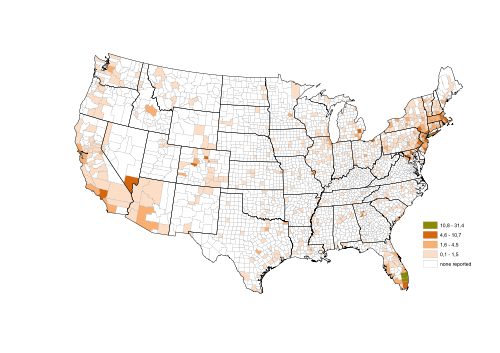

Essential Maps is a graphical Representation of the Geographical data. It is used to represent the statistical data of a particular geographical area on the Earth. Using Pan and Zoom, the Maps can be navigated. Inbuilt Navigation control makes it easy to navigate through the map.
Essential Maps is a control for the developers who develop geographical projects.
IT Scenario
Essential Map is used to represent a geographical area with some statistical data. For example, the population density of a country
.

Figure 1: Map Control Showing Population Statistics
Key Features:
The following are the key features
· Supports Shape Files
· Zooming and Panning
· ColorPalette Support
· Layer Support
· Navigation Control
· Events
· Commands
· Tooltips